ELK集群
- 环境
es-node1 10.0.18.118 主节点
es-node2 10.0.18.117 从节点
用户权限说明：
除了elasticsearch不能用root运行，其他程序均可使用root安装
es-node1 操作
- 安装
#yum -y install jre
#wget https://artifacts.elastic.co/downloads/elasticsearch/elasticsearch-6.6.1.tar.gz
#tar xf elasticsearch-6.6.1.tar.gz -C /data/server/es/
- 创建相关目录
#mkdir -p /data/server/es/elasticsearch-6.6.1/logs #mkdir /data/es/data -p #数据存储目录
- 编辑配置文件
#cat elasticsearch.yml|grep -v ‘#’
cluster.name: ELK
node.name: es-node1 #节点唯一名称，不可和其他节点重复
node.master: true
node.data: true
node.ingest: true
node.attr.rack: r1
path.data: /data/es/data
path.logs: /data/server/es/elasticsearch-6.6.1/logs/
network.host: 0.0.0.0
http.port: 9200
transport.tcp.port: 9300
http.cors.enabled: true
http.cors.allow-origin: "*"
http.max_content_length: 1024mb
gateway.recover_after_nodes: 1
gateway.recover_after_time: 5m
cluster.routing.allocation.node_initial_primaries_recoveries: 8
cluster.routing.allocation.node_concurrent_recoveries: 2
indices.recovery.max_bytes_per_sec: 256mb
discovery.zen.minimum_master_nodes: 1
discovery.zen.ping.unicast.hosts: [10.0.18.117] #这里是其他节点的ip
cluster.routing.allocation.same_shard.host: true
discovery.zen.fd.ping_timeout: 120s
discovery.zen.fd.ping_retries: 6
discovery.zen.fd.ping_interval: 30s
以上配置在es配置文件中前后写入必须有空格
- 系统配置（root用户操作）
#vim /etc/security/limits.conf
* soft nofile 65536
* hard nofile 131072
* soft nproc 2048
* hard nproc 4096
*代表所有用户
#vim /etc/sysctl.conf
vm.max_map_count = 655360
#sysctl -p && reboot 必须重启系统
- 启动ES
#useradd elk && su elk $./bin/elasticsearch -d （-d 参数为后台运行） $netstat -tnlp |grep 9200
$ curl http://localhost:9200
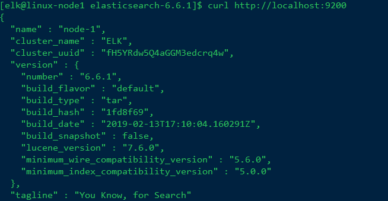
es-node2 操作
1.重新执行es-node1中的：创建相关目录（数据存储目录） 、 系统配置（root用户操作）
1.1 赋予用户权限
#chown elk.elk -R /data/server/es/es/
#chown elk.elk -R es/chown elk.elk -R /data/es/
2.从es-node1 下发到es-node2（使用root用户下发）
cd /data/server/es
scp -r elasticsearch-6.6.1/ 10.0.18.117:‘pwd’
es2只需要修改node.name即可，其他都与es1相同配置
- es-node2的配置文件
#cat elasticsearch.yml|grep -v ‘#’
cluster.name: ELK
node.name: es-node1 #节点唯一名称，不可和其他节点重复
node.master: true
node.data: true
node.ingest: true
node.attr.rack: r1
path.data: /data/es/data
path.logs: /data/server/es/elasticsearch-6.6.1/logs/
network.host: 0.0.0.0
http.port: 9200
transport.tcp.port: 9300
http.cors.enabled: true
http.cors.allow-origin: "*"
http.max_content_length: 1024mb
gateway.recover_after_nodes: 1
gateway.recover_after_time: 5m
cluster.routing.allocation.node_initial_primaries_recoveries: 8
cluster.routing.allocation.node_concurrent_recoveries: 2
indices.recovery.max_bytes_per_sec: 256mb
discovery.zen.minimum_master_nodes: 1
discovery.zen.ping.unicast.hosts: [10.0.18.118] #这里是其他节点的ip
cluster.routing.allocation.same_shard.host: true
discovery.zen.fd.ping_timeout: 120s
discovery.zen.fd.ping_retries: 6
discovery.zen.fd.ping_interval: 30s
以上配置在es配置文件中前后写入必须有空格
3.启动测试即可
es-node1 安装head插件
- 安装教程：https://github.com/mobz/elasticsearch-head
git clone git://github.com/mobz/elasticsearch-head.git
cd elasticsearch-head
npm install
vim _site/app.js
#修改 『http://localhost:9200』字段到本机ES端口与IP
grunt server
#打开浏览器 http://localhost:9100
elasticsearch-head所属组：elk
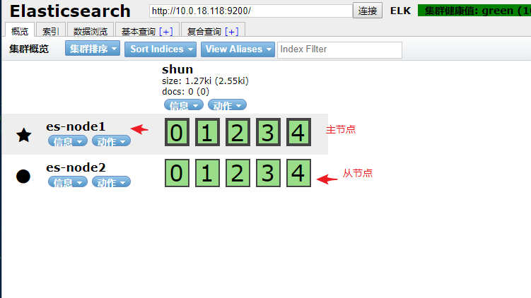
Logstash客户端安装配置
说明
由于10.0.18.117（es-node2）中有web服务器（nginx+tomcat）搭来玩的，就选择这台来使用安装Logstash
安装目录为：
/data/server/es/
安装用户为root
#wget https://artifacts.elastic.co/downloads/logstash/logstash-6.6.1.tar.gz
#tar xf logstash-6.6.1.tar.gz && cd logstash-6.6.1
- 创建一个test.conf
vim test.conf
input {
stdin{}
}
output {
stdout {
codec => rubydebug{}
}
}
#./bin/logstash -f test.conf #netstat -tnlp |grep 9600 #查看端口是否起来
- 创建一个test1.conf(提取系统日志)
input { #这里的输入使用的文件，即日志文件messsages
file {
path => “/var/log/messages” ＃这是日志文件的绝对路径
start_position => “beginning” ＃这个表示从messages的第一行读取，即文件开始处
}
}
output { ＃输出到es
elasticsearch {
hosts => ["10.0.18.118:9200","10.0.18.117:9200"]
index => "system-messages-%{+YYYY-MM}" ＃这里将按照这个索引格式来创建索引
}
}
- 启动
#./bin/logstash -f test1.conf & #传输数据将会展示
#nohup ./bin/logstash -f test2.conf –config.reload.automatic &
nohup .这种后台运行方式 会把许多日志记到这个文件里面去,会在执行目录生成一个nohup.txt
已经读取ES-NODE2的/var/log/messages”中的日志传输到es服务节点上
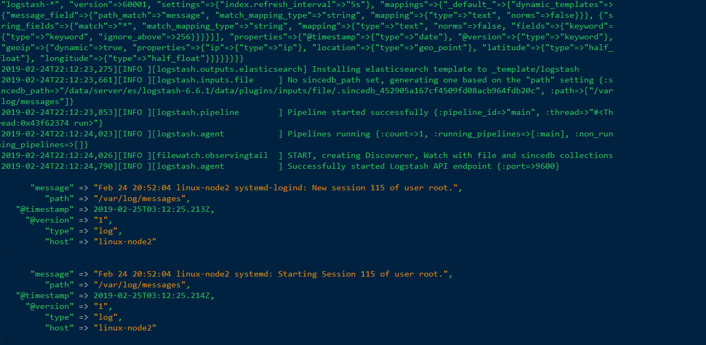
这时，到HEAD插件上去看：

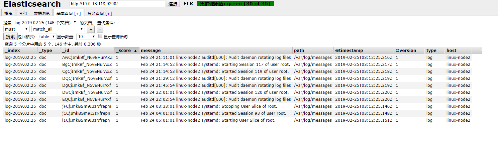
安装kibana
说明
由于10.0.18.118（es-node1）,虽然那台都无所谓。两台es那个es节点挂掉都会成为主节点,反正数据都一样
安装目录为：
/data/server/es/
安装用户为elk
#wget https://artifacts.elastic.co/downloads/kibana/kibana-6.6.1-linux-x86_64.tar.gz
#tar xf kibana-6.6.1-linux-x86_64.tar.gz
#chown elk.elk kibana-6.6.1-linux-x86_64 -R && su elk
$# cat config/kibana.yml |grep -v ‘#’
server.port: 5601
server.host: "0.0.0.0"
elasticsearch.hosts: ["http://localhost:9200"]
- 启动
$nohup /bin/kibana & #后台运行kibana
- WEB
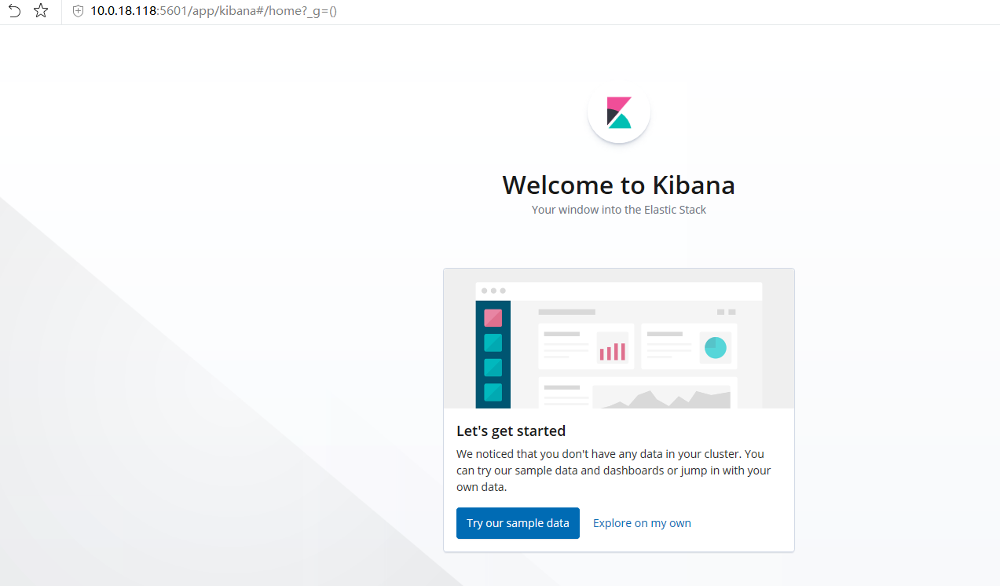
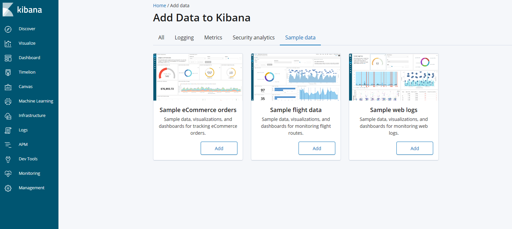
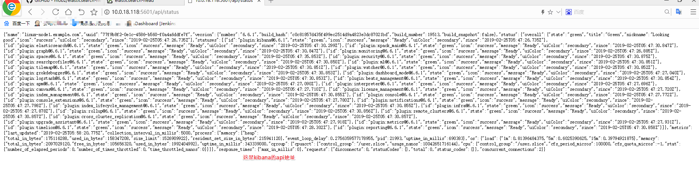
这是es中创建的索引数据：
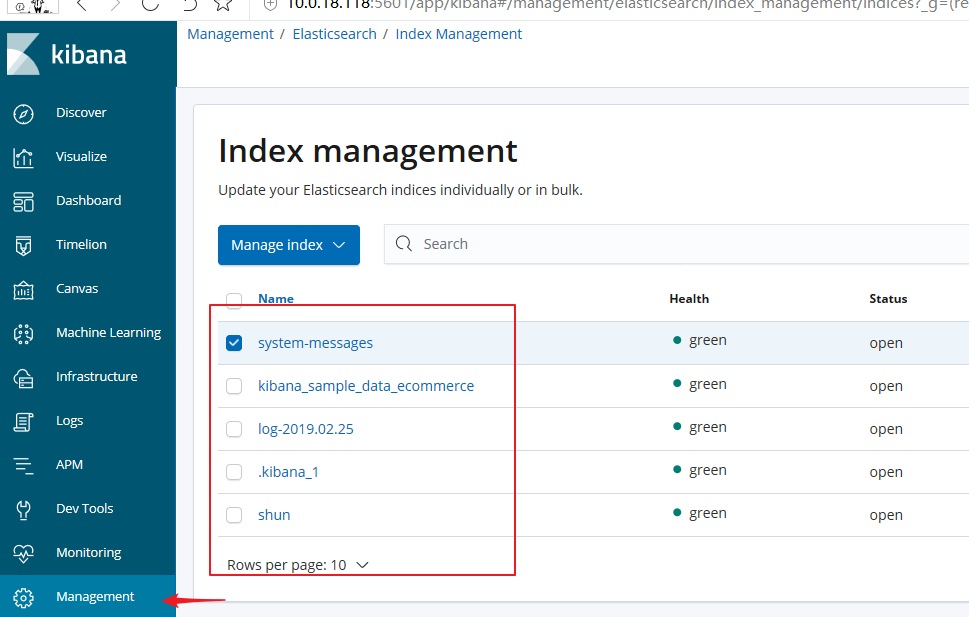
安装metricbeat
因为kibana web页面老是崩溃，需要安装此插件来结合使用
$curl -L -O https://artifacts.elastic.co/downloads/beats/metricbeat/metricbeat-6.6.1-linux-x86_64.tar.gz
$tar xzvf metricbeat-6.6.1-linux-x86_64.tar.gz
$vim metricbeat.yml #metricbeat配置文件
metricbeat.config.modules:
path: ${path.config}/modules.d/*.yml
reload.enabled: false
setup.template.settings:
index.number_of_shards: 1
index.codec: best_compression
setup.kibana:
host: "127.0.0.1:5601"
output.elasticsearch:
hosts: ["127.0.0.1:9200"]
processors:
- add_host_metadata: ~
- add_cloud_metadata: ~
$ ./metricbeat -e
创建索引
PS : 我把浏览器换为谷歌浏览器可以页面中文了
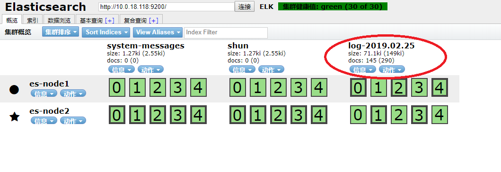
之前使用logstash在117中采集系统日志到es，那么在kibana就使用这个名称来创建索引
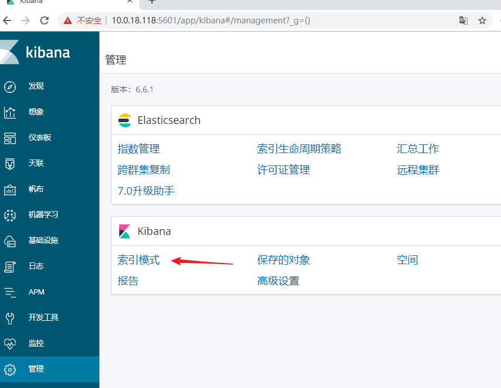
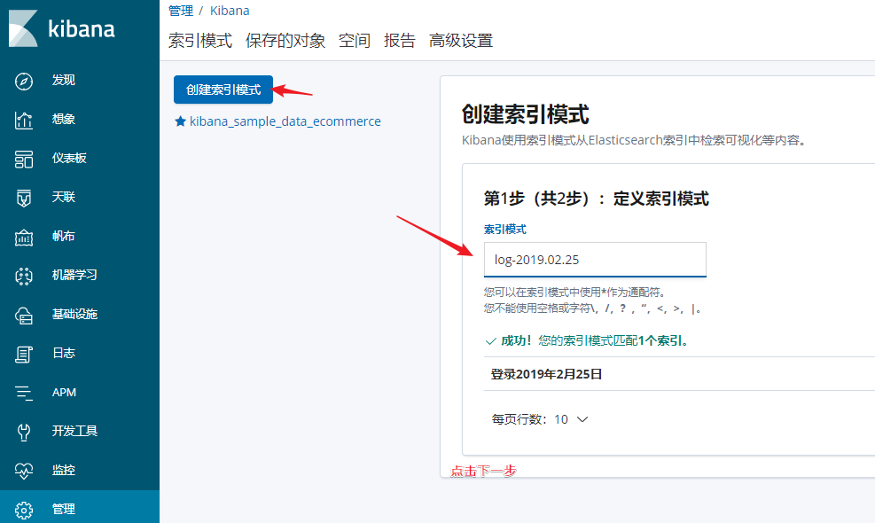
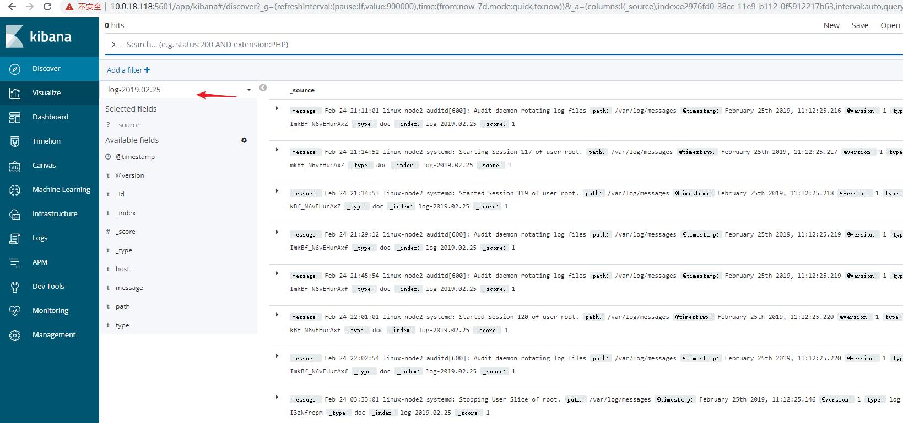